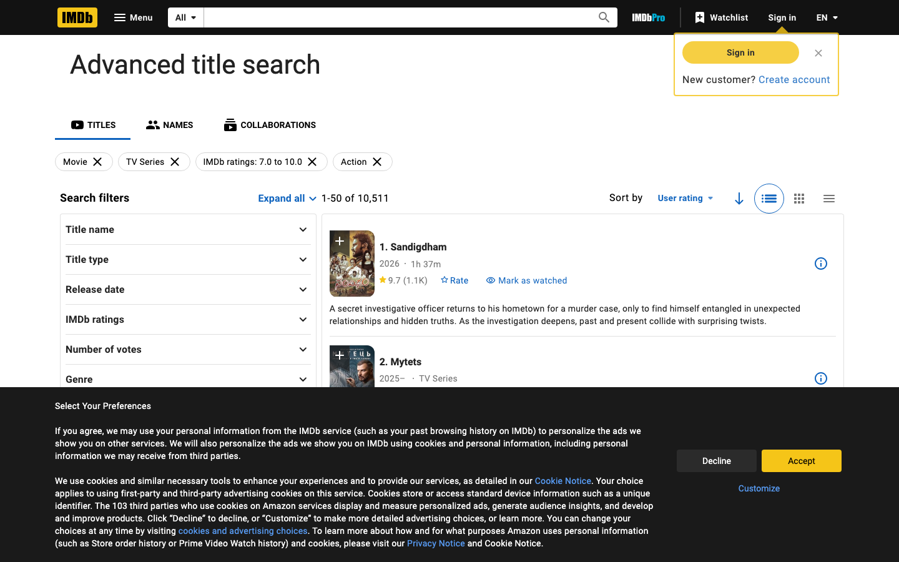
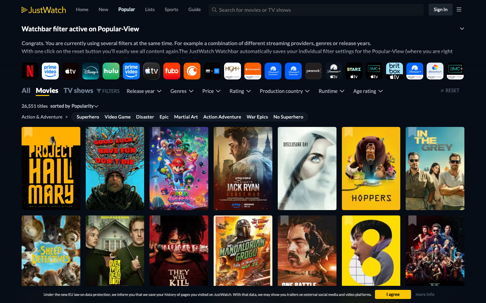
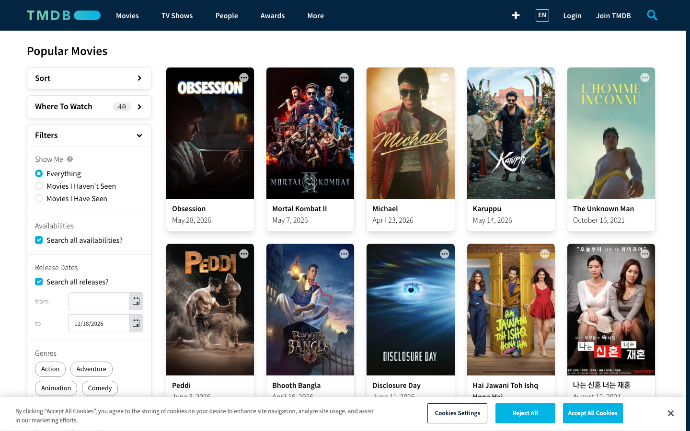

Не «знайти конкретний фільм», а «знайти щось підходяще» — коли є настрій, вік дитини або жанровий інтерес, але не назва. Який інтерфейс дає найкоротший шлях від побажання до правильного результату?



| Критерій | IMDb Adv. Search | JustWatch | TMDB Discover | Spotify | Airbnb |
|---|---|---|---|---|---|
| К1 · Швидкість до результату | 2 | 4 | 3 | 5 | 5 |
| К2 · Глибина параметрів | 5 | 4 | 5 | 3 | 5 |
| К3 · Природність побажання | 1 | 3 | 2 | 5 | 4 |
| К4 · Точність відповідності | 4 | 4 | 4 | 4 | 4 |
| К5 · Ітеративність | 2 | 5 | 4 | 5 | 5 |
| К6 · Збереження контексту | 1 | 3 | 2 | 5 | 4 |
| К7 · Допомога при невизначеності | 1 | 3 | 2 | 5 | 4 |
| К8 · Читабельність картки | 3 | 4 | 3 | 4 | 5 |
| Σ Загальний бал | 19 /40 | 30 /40 | 25 /40 | 36 /40 | 36 /40 |
Не порожня форма пошуку, а каталог що одразу показує контент (тренди / топ). Фільтри звужують, а не ініціюють пошук. Користувач починає дивитись — а не заповнювати.
Горизонтальний ряд іконок/чіпів: «Для сім'ї», «Мультфільми», «Топ тижня», «Для підлітка», «Щось легке». Один клік — відфільтровано. Вирішує проблему «не знаю чого хочу» без тексту.
Кожна зміна фільтра — миттєве оновлення сітки без перезавантаження сторінки. Відчуття контролю і дослідження замість форми → чекання → результат.
IMDb Advanced Search — наймогутніший інструмент у категорії за кількістю параметрів (К2: 5/5), але отримав 19/40 загалом.
Причина: порожня форма з 15+ полями вимагає, щоб користувач знав, чого хоче ще до взаємодії. Це ломить людей з розмитим наміром — а це 80% аудиторії Onespace 12–60.
Додатково: кожен перехід — перезавантаження сторінки (К5: 2/5). Після третього уточнення більшість кидають.
Висновок для Onespace: параметри IMDb можна взяти як глибину (К2), але упакувати їх у JustWatch-логіку — результати спочатку, фільтри як звуження. Ніколи не стартувати з порожнього поля.